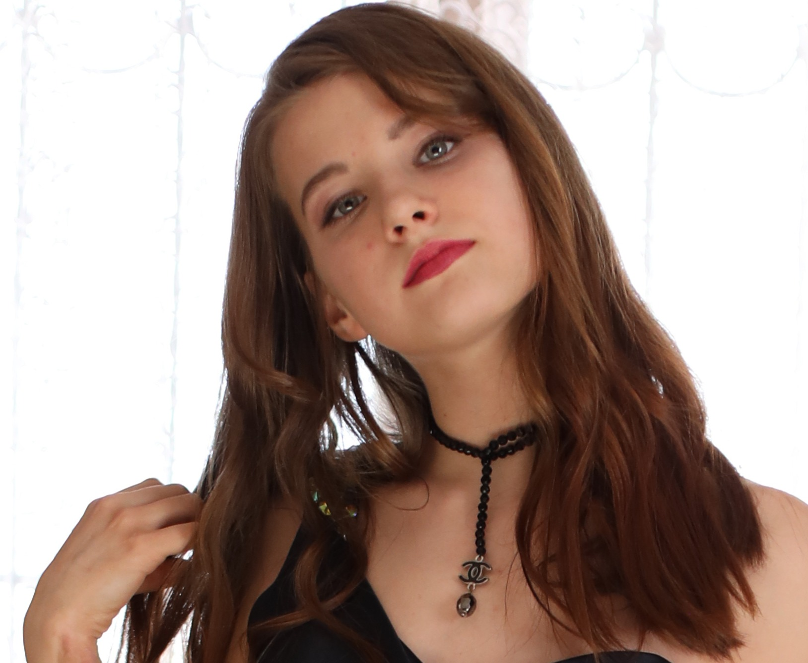

C.P RICI HERNANDEZ WATSON
Email: riciwatson5@gmail.com
Teléfono: +52 715 118 8766
Ubicación: Almaty, Kazajistán
Perfil Profesional
Profesional versátil y creativo con experiencia en modelaje, documentación técnica y diseño centrado en el usuario. Bilingüe en inglés y español, con habilidades para transformar soluciones técnicas en productos accesibles y bien documentados.
Habilidades Técnicas
- ✔️ Programación básica en Python y HTML
- ✔️ Análisis y modelamiento de deportes y acrobacias
- ✔️ Elaboración de reportes técnicos y análisis de proyectos
- ✔️ Comunicación técnica bilingüe
- ✔️ Planeación y análisis de modelaje profesional
Experiencia Profesional
- Desarrolladora de Sets Fotográficos – 2017–2025
Diseño de escenografías, coordinación de sesiones fotográficas, selección de vestuario y locaciones.
- Consultora Técnica en Modelaje – 2017–2025
Evaluación de talentos emergentes, asesoría en poses, expresión escénica y desarrollo de melodramas.
Educación
- Licenciatura en Contaduría – Universidad Estatal de Almaty
- Curso de Verano en Modelaje – Universidad Estatal de Almaty
- Estudios de Nivel Medio Superior en Actuación y Filmación – Universidad Estatal de Almaty
Idiomas
- Kazajo – Nativo
- Inglés – Avanzado
- Español – Básico